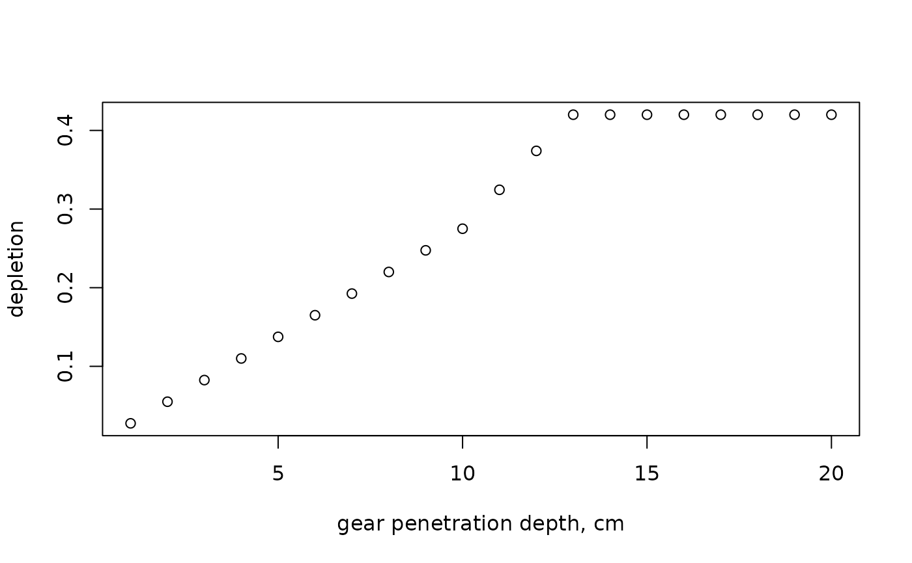
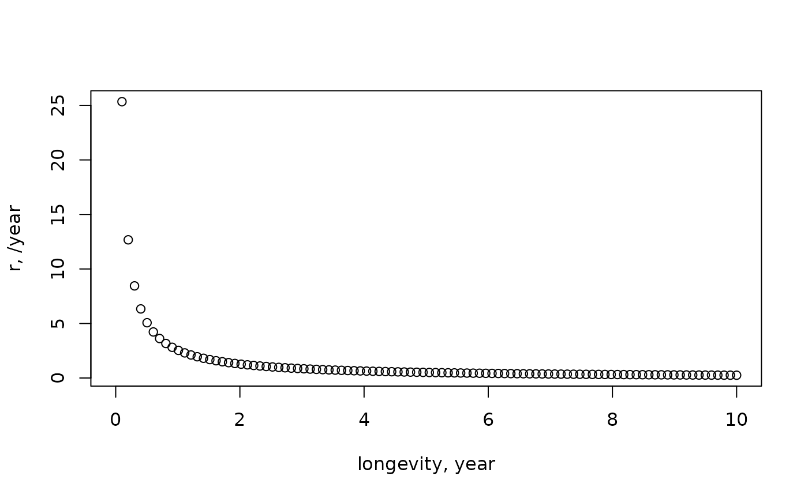
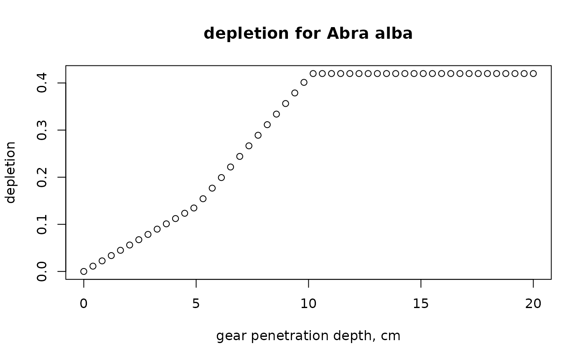
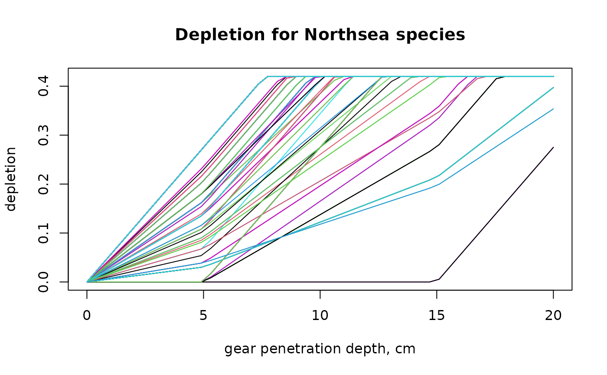
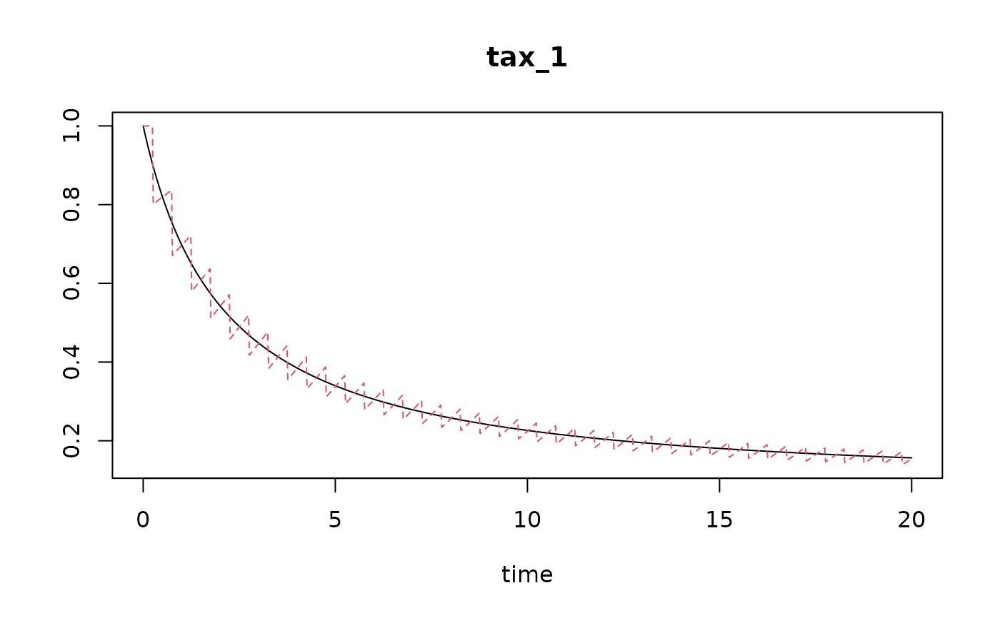

trawlingpars.Rdpar_r calculates the intrinsic rate of natural increase (r) of benthic taxa, based on their longevity.
par_d calculates the depletion rate (d) of benthic taxa, based on their depth occurrence in the sediment.
par_K calculates the carrying capacity (K) of benthic taxa, based on the (average) density, on the swept area ratio (fishing intensity), and on the species-specific parameters r and d (rate of increase and depletion fraction).
par_m calculates the mortality rate in the continuous model, so that it is compatible with the discrete (event-driven) model, based on the swept area ratio (fishing intensity), and on the species-specific parameters r and d (rate of increase and depletion fraction).
par_r (age_at_maturity = NULL, longevity = NULL)
par_d (gpd = 1, m_d = 0.055, m_max = 0.42,
fDepth, uDepth)
par_K (density, sar, r, d, t_density = NULL)
par_m (sar, r, K, d, refD = K)vector or number with the observed abundance or biomass of the taxon.
time after the onset of fishing at which the density/biomass was estimated.
If NULL, then an infinite time at which fishing intensity was = sar is assumed. In that case, the inputted density is assumed to be at steady-state with respect to sar.
fishing intensity, estimated as Swept Area Ratio, units e.g. [m2/m2/year]. One number, or a vector of the same length as the other parameters.
the rate of increase of each taxon, units e.g. [/year]. One number, or a vector of the same length as the other parameters.
depletion fraction due to fishing. One number, or a vector of the same length as the other parameters.
carrying capacity. One number, or a vector of same length as the other parameters.
reference density at which the mortality should be estimated. One number or a vector, or a vector of the same length as r.
mean lifetime or age at maturity of the species, years. age_at_maturity gives better estimates of rate of increase than longevity. At least one of these two arguments needs to be specified; if both are given a value then
gear penetration depth, units e.g. [cm]. One number or a vector.
mortality (depletion) parameter expressing the increase in mortality with increasing penetration depth, units e.g. [/cm]. One number, or a vector of the same length as gpd.
maximum mortality fraction in any layer, dimensionless. One number, or a vector of the same length as gpd.
fractional occurrence of species in sediment layers, dimensionless.
A vector of the same length as uDepth (if only one taxon) or, for multiple taxa,
a data.frame or matrix with number of columns = length of uDepth. The sum of fDepth should equal 1.
vector with depth of the upper position of the sediment layers, units e.g. [cm]. A vector with length equal to the number of columns of fDepth.
return the parameter values, as a vector.
The parameters d, K, r are used in the logistic population density model:
dC/dt = r * C * (1-C/K)
where r is the intrinsic rate of increase (units [/time]), K is the carrying capacity (same units as C).
During a fishing disturbance at time T, the density or biomass C is instantaneously reduced with a factor d:
C{T+} = C{T-} * (1-d)
where (T-) and (T+) are the time immediately before and after the disturbance.
The formulae for estimating these parameters for a species i are:
d is estimated as:
d[i] = min(m_max, sum(m_d * max(0, gpd-uDepth[i,])*fDepth[i,]))
where uDepth[i,] and fDepth[i,] are the parameters for all layers for species i, and summation is over all sediment layers.
The parameters m_d and m_max are estimated by fitting station-wide depletion rates to depletion values in Hiddink et al. (2017). See examples.
r is estimated as r[i] = 2.56/age_at_maturity[i]: or as r[i] = 5.31/longevity[i], as in Hiddink et al. (2019).
K is estimated as: K[i] = (density[i]*r[i])/(r[i]-sar * d[i]), derived from Pitcher et al., 2017.
run_perturb for how to run a disturbance model.
Traits_nioz, for trait databases in package Btrait.
MWTL for data sets on which fishing can be imposed.
map_key for simple plotting functions.
Hiddink, JG, Jennings, S, Sciberras, M, et al., 2019. Assessing bottom trawling impacts based on the longevity of benthic invertebrates. J Appl Ecol 56: 1075-1084. https://doi.org/10.1111/1365-2664.13278
Hiddink, Jan Geert, Simon Jennings, Marija Sciberras, Claire L. Szostek, Kathryn M. Hughes, Nick Ellis, Adriaan D. Rijnsdorp, Robert A. McConnaughey, Tessa Mazor, Ray Hilborn, Jeremy S. Collie, C. Roland Pitcher, Ricardo O. Amoroso, Ana M. Parma, Petri Suuronen, and Michel J. Kaiser, 2017. Global analysis of depletion and recovery of seabed biota after bottom trawling disturbance. Proc. Nat. Aca. Sci, 114 (31) 8301-8306. https://doi.org/10.1073/pnas.161885811.
C.R. Pitcher, N. Ellis, S. Jennings, J.G. Hiddink, T. Mazor, M.J.Kaiser, M.I. Kangas, R.A. McConnaughey, A.M. Parma, A.D. Rijnsdorp, P. Suuronen, J.S. Collie, R. Amoroso, K.M. Hughes and R. Hilborn, 2017. Estimating the sustainability of towed fishing-gearimpacts on seabed habitats: a simple quantitative riskassessment method applicable to data-limited fisheries. Methods in Ecology and Evolution,8,472-480doi: 10.1111/2041-210X.12705
## =======================================================
## Simple example:
## =======================================================
# -------------------------------------
# Depletion rate for one organism
# -------------------------------------
# depletion for one organism, living in [0-5], [5-10], [10-15] and >15 cm
par_d (gpd=12, fDepth = c(0.1, 0.3, 0.5, 0.2), # fractional occurrence
uDepth = c(0, 5, 10, 15)) # upper depth
#> [1] 0.2365
# -------------------------------------
# Depletion rate for several organisms
# -------------------------------------
# depth penetration for three organisms:
# 2 sediment layers (0-10 and 10-20 cm)
# sp1: in upper sediment layer, sp2: equally distributed, sp3: deep-dwelling
fDepth <- data.frame(D0_10 = c(1, 0.5, 0), #upper depth=0
D10_20 = c(0, 0.5, 1)) #upper depth=10
uDepth <- c(0, 10)
# estimate depletion, using default parameter settings
# gpd=1 -> does not penetrate in depth layer 2
par_d (gpd=1, fDepth=fDepth, uDepth=uDepth)
#> [1] 0.0550 0.0275 0.0000
# gpd=12 cm -> maximal depletion in layer 1; also mortality in layer 2
par_d (gpd=12, fDepth=fDepth, uDepth=uDepth)
#> [1] 0.420 0.385 0.110
# higher mortality coefficient:
par_d (gpd=12, fDepth=fDepth, uDepth=uDepth, m_d=0.1)
#> [1] 0.42 0.42 0.20
# depletion for one species and a range of gear penetration depths
GPD.seq <- 1:20
plot(GPD.seq,
par_d (fDepth = c(0.5, 0.4, 0.1),
uDepth = c(0, 10, 20),
gpd = GPD.seq),
xlab="gear penetration depth, cm",
ylab="depletion")

# -------------------------------------
# rate of increase
# -------------------------------------
Longevity <- seq(from=0, to=10, length.out=100)
plot(Longevity, par_r(Longevity), xlab="longevity, year",
ylab="r, /year")

# -------------------------------------
# Carrying capacity
# -------------------------------------
# estimated assuming current density is in steady-state with fishing
# this returns a NA -> the steady state of the density at the sar = 0
par_K (density=1, sar=1, r=0.1, d=0.3)
#> [1] NA
# Assuming that the density was estimated after 50 years of fishing
par_K (density=1, sar=1, r=0.1, d=0.3, t_density=50)
#> [1] 916816.4
# estimated average mortality rate is larger than the rate of increase, r
par_m (sar=1, r=0.1, d=0.3, K=1)
#> [1] 0.3553768
# this returns a value -> the species is able to persist under the current sar
par_K (density=1, sar=1, r=0.1, d=0.075)
#> [1] 4.537522
par_m (sar=1, r=0.1, d=0.3, K=10) # smaller than 0.1
#> [1] 0.3553768
# estimated for a sequence of fishing intensities
sar.seq <- seq(from=0.05, to=2, by=0.05)
K.seq <- par_K(density = 1,
sar = sar.seq,
r = 0.5,
d = 0.2)
plot(sar.seq, K.seq,
xlab="Swept area ratio, /yr",
ylab = "carrying capacity")
## =======================================================
## Fishing parameters for species in Traits_nioz database
## =======================================================
# -----------------------------
# Depletion rate
# -----------------------------
# column names with depth occurrence of species in trait database
DepthTraits <- subset(metadata(Traits_nioz),
subset = trait=="Substratum depth distribution")
DepthTraits
#> colname trait modality indic value score units
#> 1 ET1.M1 Substratum depth distribution 0 1 0.0 1.00 cm
#> 2 ET1.M2 Substratum depth distribution 0-5 1 2.5 0.75 cm
#> 3 ET1.M3 Substratum depth distribution 5-15 1 10.0 0.50 cm
#> 4 ET1.M4 Substratum depth distribution 15-30 1 22.5 0.25 cm
#> 5 ET1.M5 Substratum depth distribution >30 1 30.0 0.00 cm
toselect <- DepthTraits$colname
# select depth occurrence traits in trait database
Traits_depth <- Traits_nioz[, c("taxon", toselect)]
head(Traits_depth)
#> taxon ET1.M1 ET1.M2 ET1.M3 ET1.M4 ET1.M5
#> 1 Abludomelita 0.5 0.5 0.0 0 0
#> 2 Abludomelita obtusata 0.5 0.5 0.0 0 0
#> 3 Abra alba 0.0 0.5 0.5 0 0
#> 4 Abra nitida 0.0 1.0 0.0 0 0
#> 5 Abra prismatica 0.0 1.0 0.0 0 0
#> 6 Abra tenuis 0.0 1.0 0.0 0 0
# give suitable names to the columns
cn <- c("x0", "x0-5", "x5-15", "x15-30", "x>30")
colnames(Traits_depth)[-1] <- cn
head(Traits_depth)
#> taxon x0 x0-5 x5-15 x15-30 x>30
#> 1 Abludomelita 0.5 0.5 0.0 0 0
#> 2 Abludomelita obtusata 0.5 0.5 0.0 0 0
#> 3 Abra alba 0.0 0.5 0.5 0 0
#> 4 Abra nitida 0.0 1.0 0.0 0 0
#> 5 Abra prismatica 0.0 1.0 0.0 0 0
#> 6 Abra tenuis 0.0 1.0 0.0 0 0
# vector with corresponding depth of upper boundary
uDepth <- c(0, 0, 5, 15, 30)
# depletion for all species and 1 cm gear penetration depth
d_1cm <- par_d( fDepth = Traits_depth[,-1],
uDepth = uDepth,
gpd = 1)
summary(d_1cm)
#> Min. 1st Qu. Median Mean 3rd Qu. Max.
#> 0.00000 0.02750 0.05500 0.04183 0.05500 0.05500
# depletion for Abra alba and range of penetration depths
GPD.seq <- seq(0, 20, length.out=50)
A.alba <- subset(Traits_depth, subset=taxon=="Abra alba")
A.alba
#> taxon x0 x0-5 x5-15 x15-30 x>30
#> 3 Abra alba 0 0.5 0.5 0 0
d.seq <- par_d(fDepth = A.alba[-1],
uDepth = uDepth,
gpd = GPD.seq)
plot(GPD.seq, d.seq,
xlab = "gear penetration depth, cm", ylab = "depletion",
main = "depletion for Abra alba")

# depletion rate for all species and different penetration depths
ALL_d <- outer(X = 1:nrow(Traits_depth), # combine all x-values
Y = GPD.seq, # with these y-values
FUN = function(i, gpd)
par_d(fDepth = Traits_depth[i, -1], # depth of species i
uDepth = uDepth,
gpd = gpd))
matplot(GPD.seq, t(ALL_d),
xlab = "gear penetration depth, cm", ylab = "depletion",
main = "Depletion for Northsea species",
type = "l", lty=1)

# -----------------------------
# Carrying capacity
# -----------------------------
# assume gear penetration depth = 3 cm
# 1. estimate depletion rate
d_3cm <- data.frame(
taxon = Traits_depth$taxon,
d = par_d(fDepth = Traits_depth[,-1],
uDepth = uDepth,
gpd = 3))
Dens <- get_density(
data = MWTL$density,
descriptor = list(station=station),
taxon = taxon,
value = list(density=density),
averageOver = year)
FishStat <- merge(Dens ,
MWTL$abiotics[,c("station", "sar")],
by = "station")
FishStat <- merge(FishStat,
MWTL$fishing [,c("taxon","r")],
by = "taxon")
FishStat <- merge(FishStat,
d_3cm,
by = "taxon")
KE <- with(FishStat,
par_K (density = density,
sar = sar,
r = r,
d = d))
FishStat$KE <- KE
# Note: some species do not have a value for the carrying capacity
# based on the assumption that the density is at steady state with the
# current fishing intensity.
length(which(is.na(KE)))/length(KE) # Fraction that cannot be there
#> [1] 0.009615385
# Carrying capacity, assuming that fishing has been going on only for 50 years
FishStat$KE50 <- with(FishStat,
par_K (density = density,
t_density = 50,
sar = sar,
r = r,
d = d))
# total carrying capacity and total density per station:
Kstat <- with(FishStat,
tapply(KE,
INDEX = station,
FUN = sum)) # summed carrying capacity
Dstat <- with(FishStat,
tapply(density,
INDEX = station,
FUN = sum)) # summed density
Kstat <- list(station=names(Kstat), K=Kstat)
Kstat <- merge(MWTL$stations, Kstat)
Kstat$D <- Dstat
head(Kstat)
#> station x y K D
#> 1 BREEVTN02 3.31 53.52 1178.7365 1087.1328
#> 2 BREEVTN03 4.44 53.19 650.9417 640.3413
#> 3 BREEVTN04 4.31 53.10 1504.1525 1434.8697
#> 4 BREEVTN05 4.01 53.02 1990.5265 1853.5392
#> 5 BREEVTN06 4.23 52.82 1200.3763 1144.2236
#> 6 BREEVTN07 3.84 52.76 1177.7428 1125.9104
with(Kstat, map_key(x, y,
contours=MWTL$contours,
colvar = K/D-1, # color variable
clim = c(1e-2,1),
main = "K/D-1 for 3 cm trawling",
pch = 18, cex = 2, log = "c"))
## ====================================================
## Mortality parameter and steady-state
## ====================================================
# discrete parameter values
parms <- c(r=0.5, d=0.2, K=1)
sar <- 2
tend <- 20
# output times and event times
times <- seq(from=0, to=tend, length.out=1000)
events <- seq(from=0.5/sar, to=tend, by=1/sar)
# model run with events
run.discrete <- run_perturb(parms = parms,
times = times,
events = events)
# corresponding mortality paramter
m <- par_m(sar = sar,
r = parms["r"],
d = parms["d"], K = parms["K"])
# put all in parameter vector (for continuous mortality)
parms.c <- c(parms[c("r", "K")], m=m)
# model run with continuous mortality
run.continuous <- run_logistic(parms = parms.c,
times = times)
# compare both (it is not perfect)
plot(run.continuous, run.discrete)
